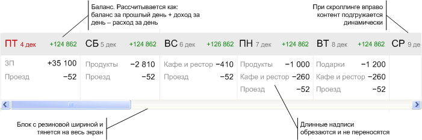

Тестовое задание для Дзенмани
Версия 1.7
Выполнил Стриго Евгений Васильевич.
Задание
Образец контрола из задания:

Демонстрация варианта реализации:
Описание реализации
Технологии
В работе использованы:
- javascript-фреймворк jQuery;
- css-фреймворк из комплекта YUI-2 (компоненты reset, fonts, grids и base)*.
* использованный css-фреймворк не является необходимым для работы контрола и использован, главным образом, для верстки макета страницы с примером
Клиентская часть
После загрузки страницы, вычисляется количество элементов (дней) которые нужно загрузить за один запрос. Формула для вычисления — ширина разрешения экрана делённая на ширину элемента + 1. Расчёт исходящий из ширины экрана, а не окна браузера, используется для того, чтобы при любом разрешении экрана и при любом размере самого контрола, он гарантированно закрывал бы элементами всю свою ширину (при условии, что дата начала вывода в принципе позволяет закрыть элементами всю ширину контрола).
После расчёта инициализируется объект engine, отвечающий за загрузку и отображение элементов. Объекту можно передать стартовый набор элементов в качестве параметра, либо вызвать его метод get() после инициализации. В данном примере выбран второй способ.
Структура объекта engine:
- свойство posts: array — хранит массив загруженных элементов;
- свойство target: object — хранит ссылку на объект типа div, в который загружаются элемента;
- свойство loader: object — хранит ссылку на объект типа div, который отображает индикатор загрузки;
- свойство container: object — хранит ссылку на объект типа div, в котором находятся блоки target и loading;
- свойство scroller: object — хранит ссылку на объект типа div, который реализует прокрутку;
- свойство action: string — хранит url серверной части контрола;
- свойство busy: bool — отображает состояние ajax-объекта (ожидает данные либо свободен):
- свойство count: int — количество элементов, загружаемых за один запрос;
- метод init() — метод инициализации объекта;
- метод get() — реализует запрос к серверу и получение ответа от него;
- метод append() — метод вставки загруженных элементов в контейнер указанный в свойстве target;
- метод render() — реализует генерацию html-кода для отображения элемента;
- метод plot_row() — реализует генерацию кода для транзакционных строк элементов;
- метод setBusy() — реализует переключение состояния объекта engine;
- метод showLoading() — реализует отображение/сокрытие индикатора загрузки.
Расчёт позиции прокрутки, при которой необходимо загрузить следующую порцию элементов делается при выполнении следующего неравенства: C.width — S.width <= S.scrollpos + K, где С — блок-контейнер для элементов и заставки-загрузчика, S — родительский блок с линейкой прокрутки, а K — коэффициент корректирующий расстояние до конца линейки прокрутки, при котором начинается загрузка (в данном примере он равен 45). Ширина блока-контейнера С изменяется динамически, при каждой загрузке элементов, и рассчитывается по формуле (Nобщ + 1) * E.width, где Nобщ — общее число элементов, загруженных в контрол, E.width — ширина одного элемента. Общее число элементов увеличивается на единицу, т. к. после всех элементов располагается блок отображающий индикатор ajax-загрузки.
Ответ сервера на запрос элементов представляет собой JSON-строку. Массив, описывающий элементы имеет следующую структуру:
- id: int — идентификатор дня (представляет собою Unix timestamp по состоянию на 0 часов 0 минут 0 секунд рассматриваемого дня;
- day: string — строка описывающая день недели рассматриваемого дня;
- date: string — строка описывающая дату рассматриваемого дня;
- balance: array — массив описания баланс пользователя на начало рассматриваемого дня;
массив имеет следующую структуру:
- name: string — строка описывающая название баланса (слово "баланс" на языке пользователя контрола);
- value: int — число, описывающее значение баланса пользователя;
- transactions: array — - массив транзакций пользователя за рассматриваемый день. Состоит из массивов, описывающих каждую транзакцию
- day_balance**: int — сумма по всем транзакциям за день.
Массив описывающий каждую транзакцию имеет ту же структуру, что и массив описывающий баланс пользователя:
- name: string — строка описывающая название транзакции на языке пользователя контрола;
- value: int — число, описывающее сумму транзакции.
Из перечисленных строк массива описывающего элементы строго обязательной является лишь строка id, без которой описанный в массиве элемент отображаться не будет.
Из транзакционных строк 5 — 16 в массиве могут присутствовать не все, а произвольное количество (от 0 до всех). При этом, впрочем, надо обратить внимание на то, что в задании не оговорено, что контрол может растягиваться или прокручиваться по-горизонтали.
Get-запрос передаваемый серверу содержит в себе следующие параметры:
- count: int — число элементов в «порции»;
- last: int — идентификатор последнего загруженного в контрол элемента;
- balance**: int — баланс на конец дня последнего загруженного элемента. Рассчитывается как сумма строк balance и day_balance последнего загруженного элемента.
** следует сразу уточнить, что параметр запроса «balance» и строка возвращаемого массива «day_balance» включены только в данную демо-версию контрола, в связи с особенностями серверной части, о которых будет рассказано ниже. В рабочей версии этот параметр и эта строка не требуются, т. к. начальный баланс на конкретную дату будет внутренне определятся на сервере.
Ширина самого контрола является плавающей. В данном примере она установлена в размере 80% от доступной ему ширины родительского блока.
При отображении данных, денежные величины имеют приоритет перед поясняющими подписями. Т. е., если подпись не входит по ширине в пространство строки, оставшееся после вывода денежного значения, то она будет обрезана. Содержание подписи дублируется в её параметре title, так чтобы пользователь мог наведя курсором на строку увидеть полной текст подписи. Этот механизм реализован как в строках описывающих расходы и доходы, так и в заголовке каждого элемента (т. е., название месяца, число и день недели могут быть обрезаны, и они так же продублированы в подписи).
Серверная часть
Вся подготовка данных для отображения (определение начального баланса, группировка транзакций по дням) возложена на серверную часть контрола.
В настоящем примере серверная часть имеет очень упрощённый механизм работы, предназначенный лишь для демонстрации работы контрола. Все данные генерируются случайным образом, исходя из переданного серверу значение баланса и идентификатора дня. Генерация осуществляется в периоде от 1го декабря до текущей даты на сегодня. Описание каждого дня генерируется непосредственно в виде массива со структурой, описанной выше. В связи с тем, что высота контрола в примере позволяется отображать не более 4х транзакций в день, максимальное число транзакционных строк в массиве ограничено четырьмя.
Сгенерированное нужное количество массивов, описывающих дни, помещается в качестве элементов в общий результирующий массив в порядке возрастания даты. Результирующий массив конвертируется в json-строку и возвращается клиенту.
В реальном случае, логика backend-приложения может быть любой, сколь угодно сложной, однако она должна выдавать требуемое количество массивов указанной структуры (кроме поля day_balance, которое не является обязательным), исходя из двух указанных выше параметров (параметр balancе так же ные является обязательным, более того, в реальном приложении использовать его не рекомендуется из соображений целостности данных).
Исходный код
Исходный html-код клиентской части проверен на валидаторе W3C:
Исходный css-код не проходит полную проверку на валидаторе CSS2.1, из-за использования параметров overflow-x и overflow-y, а также из-за наличия css-хаков для IE во фреймворке YUI, вызывающих на валидаторе ошибку разбора.

В версии 1.5 былы добавлена поддержка неограниченного числа транзакций в день, и так же поддержка мультиязычного интерфейса контрола (названия транзакций, дней недели и месяцев теперь загружаются с сервера).